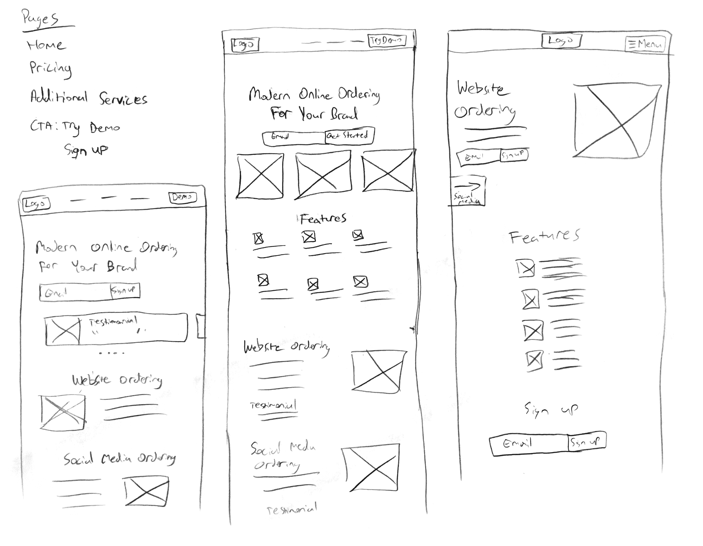
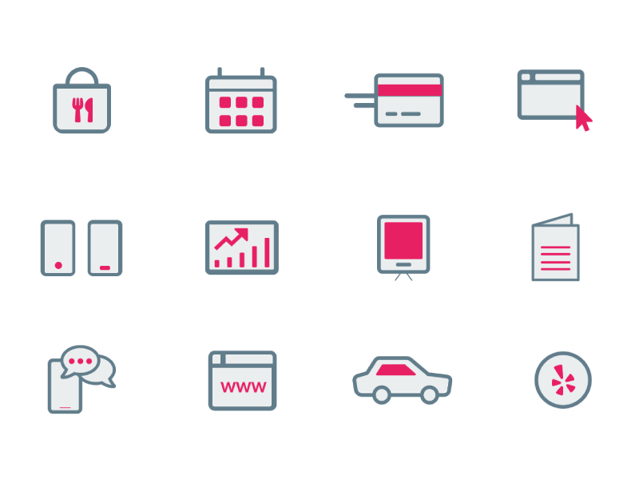
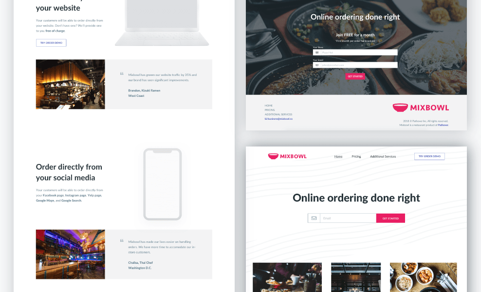
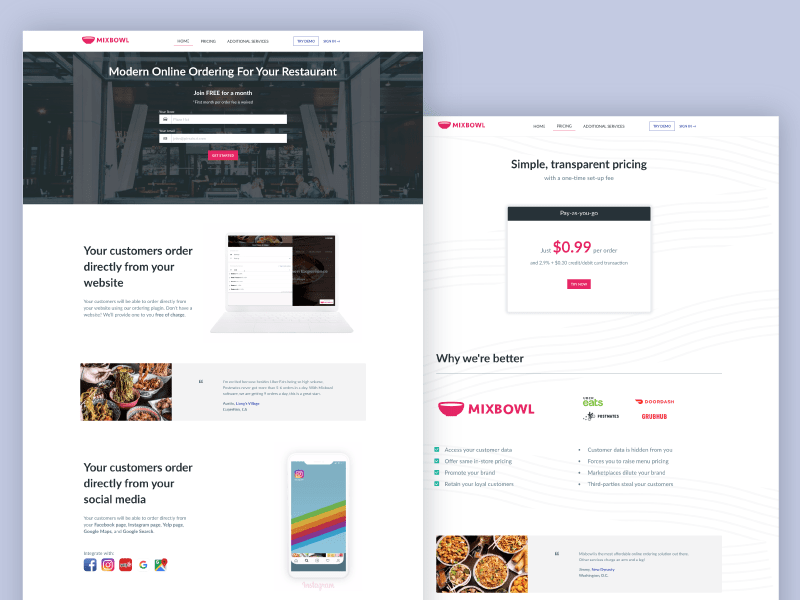

SCOPE
UI, UX, branding, user research, information architecture, copywriting, illustrations, front-end development.
CHALLENGE
Develop a strategy for the startup to promote their products and services to potential restaurant clients.
SOLUTION
A website that showcases Mixbowl through demos as well as testimonials that help build credibility.
The Beginning - Problems
While at the Pathover, I was doing a combination of sales during the day and design work at night. For sales, I was going out in the field and approaching restaurants to tell them about Mixbowl and how we could help their business increase revenue. With the company being a very early stage startup, I was running into these issues from restaurant owners:
"I have never heard of you before"
"How can we trust you?"
"I don't understand the value of your product"
These issues were rising so much that they needed to be addressed immediately. Thus, we decided we needed a brand new website that took these issues into account.
Define
Starting out, we met as a team to plan out the website. We defined a number of things:
Goals
- Increase number of restaurant sign-ups
- Build trust in the quality of our products
- Increase brand awareness
Important metrics to track
- Number of sign-ups
- Number of impressions and reach
- Bounce rate
- Average time spent on page
- Geography of visits
Duration
We would spend no more than 1 week on this project.
Target Audience
Restaurant owners were the main target audience. They would be visiting our website after we've approached them already.
Website Needs
After defining, we then finalized on elements that were needed for the site. These were:
- Pricing
- Demo of website ordering
- Demo of social media ordering
- Product features
- Sign-up page
- Contact
- Food imagery
- Additional services
Sketches
Some wireframe sketches
I started sketching out wireframes and played around with different layouts. Due to my prior experience with restaurant owners, I noted how busy they usually are. They tend to always be running around and not have much leisure time. Because of this, it was extremely important that our website be very minimal and lightweight. It needed to only have the necessary elements to convey out our message and brand.
So we stuck with only 3 pages for the site and used a lot of white space. We utilized beautiful imagery to keep it both visually appealing and engaging.
Custom Graphic Elements
Illustration icons
Custom illo-cons
These were illustration icons (I call them illo-cons) that I crafted for the site. They utilize Mixbowl's brand colors and help the audience visualize important sections.
Video demos
Kizuki Ramen's website with Mixbowl
Poke Dojo's Instagram with Mixbowl
These video demos were injected into the site to showcase the product in a quick and seamless manner.
Hi-Fi Mockups

Some of the different variations for homepage
After some critiques on the wireframes, I brought in a few of the wireframes into Sketch. I then prototypes the interactions and sent out the prototype to the team for review.
Final Design

Homepage and pricing page
We ended up going forward with the lightweight direction and wanted to put more focus on our unique features, product demos, and the delicious restaurant experience.
Development
After finalizing on the design, I brought it to life by developing the site. I used Zurb Foundation to speed up the process.
Key Takeaways
Given that I was the only designer on the team, I had to spend some time teaching the team good common UX and design practices. It was a great to get to work with mostly developers and to actually code this site myself. I learned new front-end tricks thanks to the team!
Since the launch of the site, We've quadrupled our sign-up rate, increased all our KPI numbers, and have decreased our bounce rate.